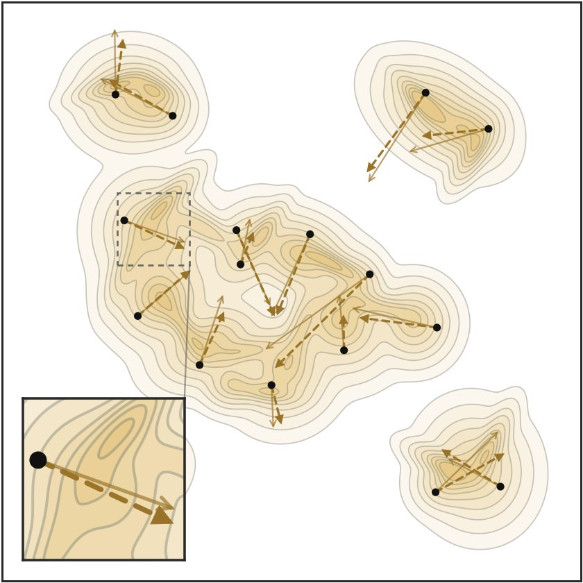
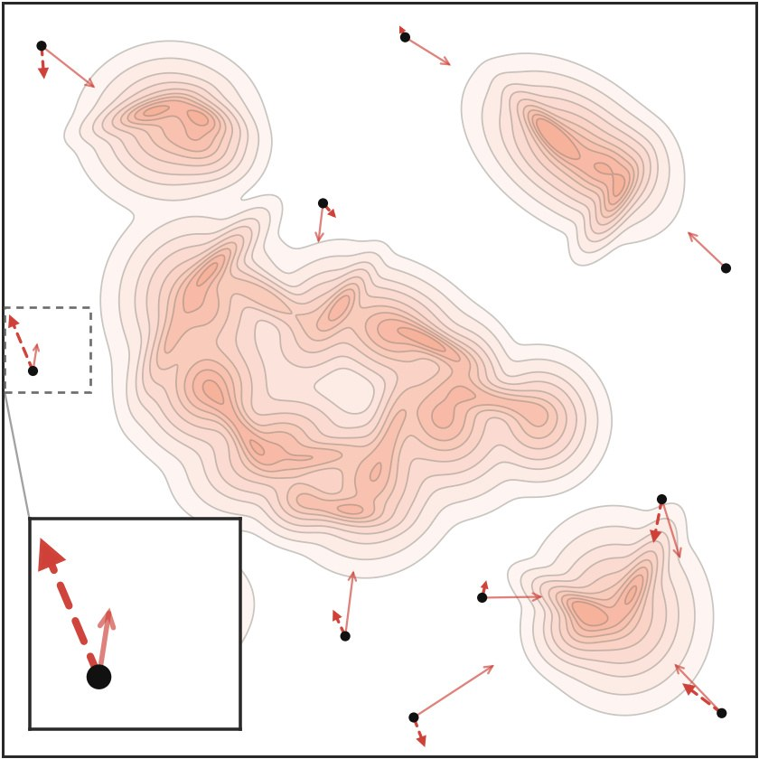
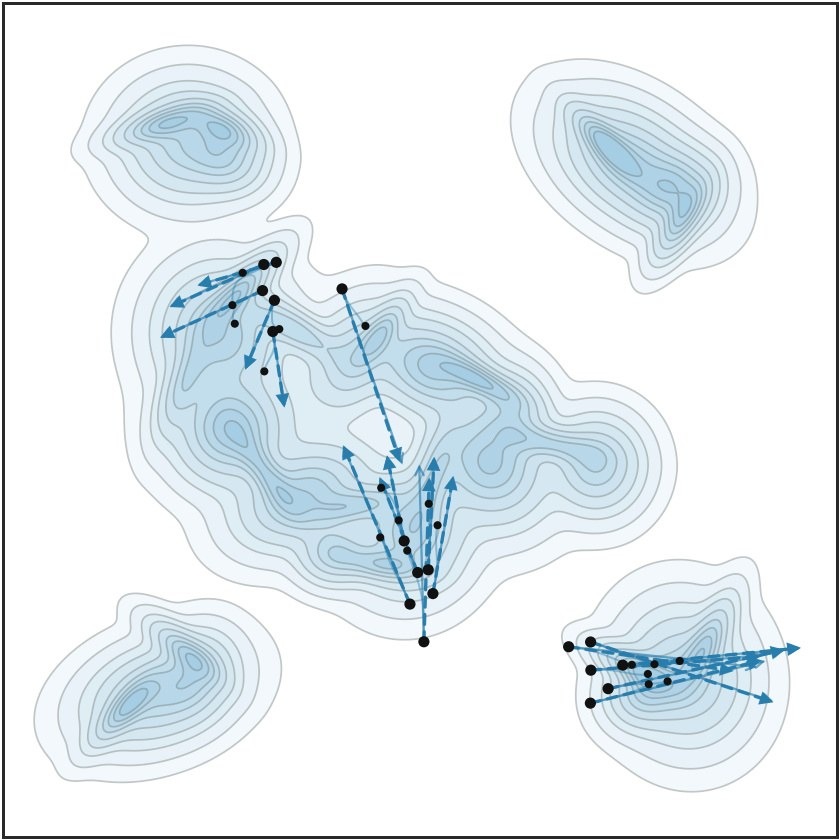
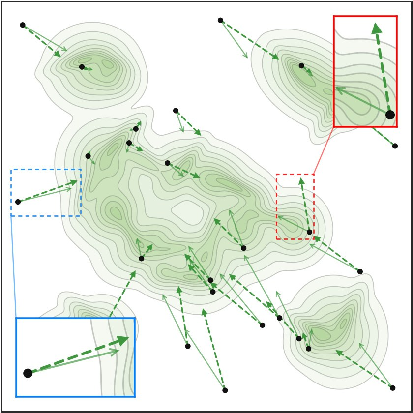

sDMD Sinkhorn Distribution Matching Distillation
1 KAIST · 2 Netflix · † work done during an internship at Netflix · ‡ corresponding authors
MiniMax H3 T2VA (4-Step)
Wan 2.1 14B T2V (4-Step)
Method
Distribution Matching Distillation (DMD) distills a multi-step diffusion model into a few-step generator by minimizing reverse KL. Its gradient follows from a fixed-point iteration of Wasserstein gradient flow with integral KL (IKL), reverse KL averaged over noise levels, as the energy functional. Because IKL guides samples by local density alone, teacher scores can be unreliable in regions of low teacher density, and the mode-seeking behavior of reverse KL can collapse the student onto a subset of the teacher modes. sDMD augments IKL with an optimal transport term, realized with Sinkhorn divergence estimated from finite batches, which guides outlier samples toward the target and promotes mode coverage. Since errors in the estimated Sinkhorn velocity can perturb in-domain samples for which IKL is already accurate, sDMD activates the Sinkhorn correction adaptively from discriminator outputs, focusing on outliers where IKL may be unreliable.

aIKL · aligned samples
When the student already overlaps the teacher, the score difference carries particles onto the target.

bIKL · outliers
Learned scores (dashed) are unreliable far from the teacher's support.

cIKL · mode seeking
Reverse KL is mode seeking and collapses particles onto a subset of modes.

dSinkhorn transport
The transport plan guides outliers (blue). Finite-batch noise can perturb well-placed samples (red), so the scheduler applies transport only where teacher support is weak.
Scroll the diagram sideways.
Training objective
Each generator sample \(x = f_\theta(z)\) is regressed onto the stop-gradient target \(x + V_{\mathrm{sDMD}}(x)\). The velocity has two parts. The IKL velocity is the teacher-minus-student score difference averaged over noise levels, which is the DMD update. The Sinkhorn velocity is the difference between where the entropic transport plan sends \(x\) among the teacher samples and among its own batch. Finite-batch Sinkhorn is noisy: its velocity is estimated from a finite batch of samples per prompt, and that estimation error can perturb in-domain samples for which IKL is already accurate. The goal is therefore to apply the Sinkhorn correction selectively, only to outliers where the teacher score is likely unreliable. To identify them, we rely on the discriminator \(D_\phi\) that DMD2 already trains for its adversarial loss, which separates noised teacher samples from noised student samples. We take \(\lambda_\phi = 1 - D_\phi(x_t,t)\) as a proxy for weak teacher support. If \(\lambda_\phi\) exceeds a threshold \(\lambda\), the Sinkhorn velocity is added; otherwise only the IKL velocity is used.
\[ \textcolor{#f0917f}{V_{\mathrm{IKL}}(x)} = \mathbb{E}_{t,\epsilon}\Big[\alpha_t\big(\nabla\log p_t(x_t) - \nabla\log q_t(x_t)\big)\Big], \qquad \textcolor{#7bd79a}{V_{S_\beta}(x)} = T_{q,p}(x) - T_{q,q}(x) \]
\[ V_{\mathrm{sDMD}}(x) = \textcolor{#f0917f}{V_{\mathrm{IKL}}(x)} + w\,\mathbf{1}\!\left[\lambda_\phi(x_t,t) > \lambda\right]\textcolor{#7bd79a}{V_{S_\beta}(x)}, \qquad \lambda_\phi(x_t,t) = 1 - D_\phi(x_t,t) \]
\[ \mathcal{L}_{\mathrm{sDMD}}(\theta,\phi) = \mathbb{E}_{z}\,\Big\| f_\theta(z) - \mathrm{sg}\big(f_\theta(z) + V_{\mathrm{sDMD}}(f_\theta(z))\big)\Big\|^2 + \mathcal{L}_{\mathrm{adv}}(\phi,\theta) \]
Text-to-Image (FLUX.1-dev, Qwen-Image)
Text-to-Video (Wan2.1-14B)
Diversity
Text-to-Image (FLUX.1-dev, Qwen-Image)
Text-to-Video (Wan2.1-14B)
BibTeX
@article{kim2026sinkhorn,
title = {sDMD: Sinkhorn Distribution Matching Distillation},
author = {Kim, Jaihoon and Li, Lingxiao and Shimada, Soshi and Cooper, Roshni and Sung, Minhyuk and Zhao, Yiwei},
journal = {arXiv preprint},
year = {2026}
}